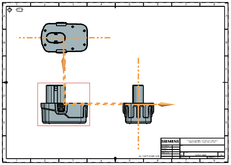
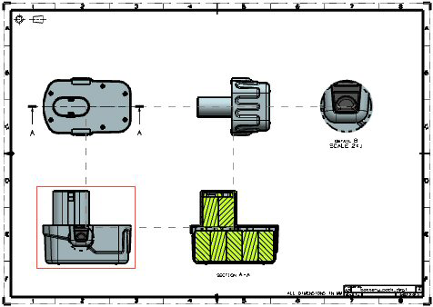

对齐视图
预计完成这堂课需要：5–7 分钟
使用辅助线对齐视图
您可以使用辅助线来对齐视图。辅助线提供快速快速查看与放置视图与其它视图关系的方法，但在移动一个或多个视图时不会维持对齐关系。
|
注释 |
如果辅助线没有显示，并且您处于单色模式，请检查首选项→可视化→颜色/字体，并确保部件设置→选择的颜色以及图纸部件设置→选择的颜色与背景颜色不同。 |

创建关联的视图对齐
您可以在放置视图到图纸上时使用关联对齐选项将视图与其它视图永久对齐。这些选项适用于除了剖视图外的所有支持的视图，即使视图更改或移动，也会强制对齐。如果高亮显示或选中某个视图，两个视图之间的关联对齐将通过虚线来指示。

您也可以在现有视图之间添加永久的关联对齐，包括剖视图，或者使用视图对齐命令来编辑现有关联对齐。